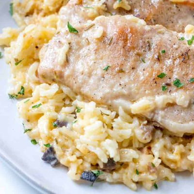

Home
Beef Stroganoff
Cheesy Chicken Rice
Loaded Potato Soup
Porkchops and Rice
Family Favorite Instant Pot Recipies
Ready..
2 10.5oz can cream of chicken soup
1 10.5oz can cream of onion
1 10.5oz can cream of celery
1 10.5oz can cream of mushroom
1 10.5oz can cream of mushroom
2-3 center cut boneless pork chops
3 cups basmati rice
Set...
1. Add porkchops evenly to bottom of crockpot.
2. Cover completely with the cream soups.
3. Cook on low for 6-8 hours or on high for 4-6 hours.
4. Cook rice per package instructions when ready to serve.
5. Enjoy!
Yum!
